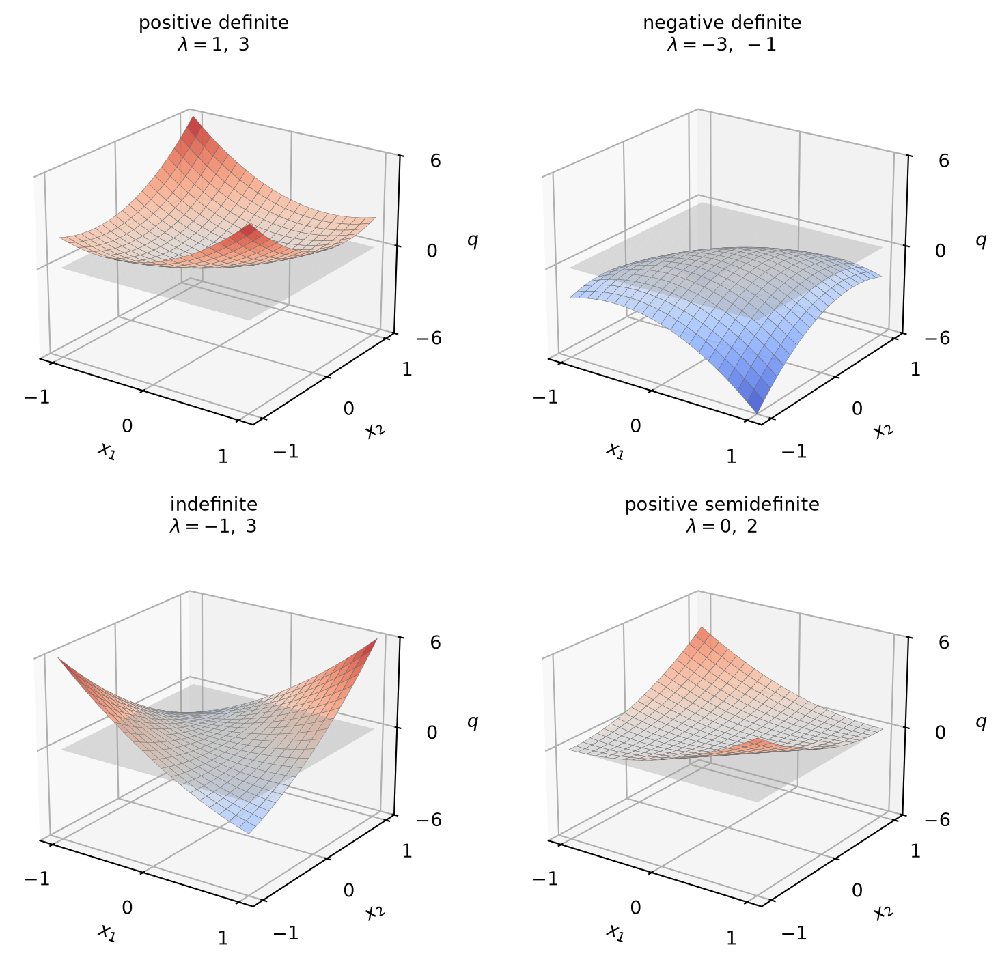
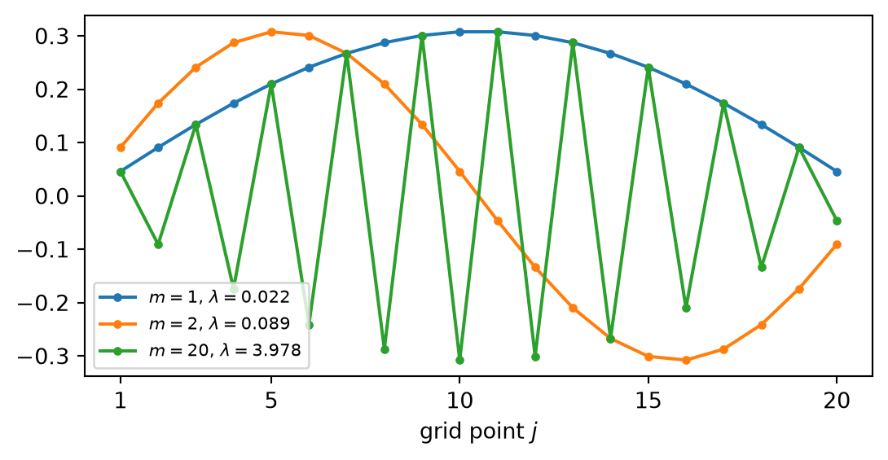
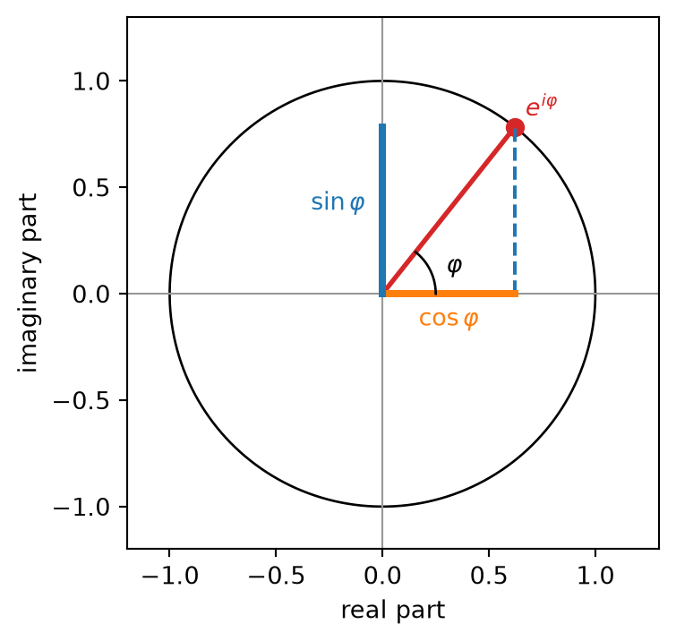
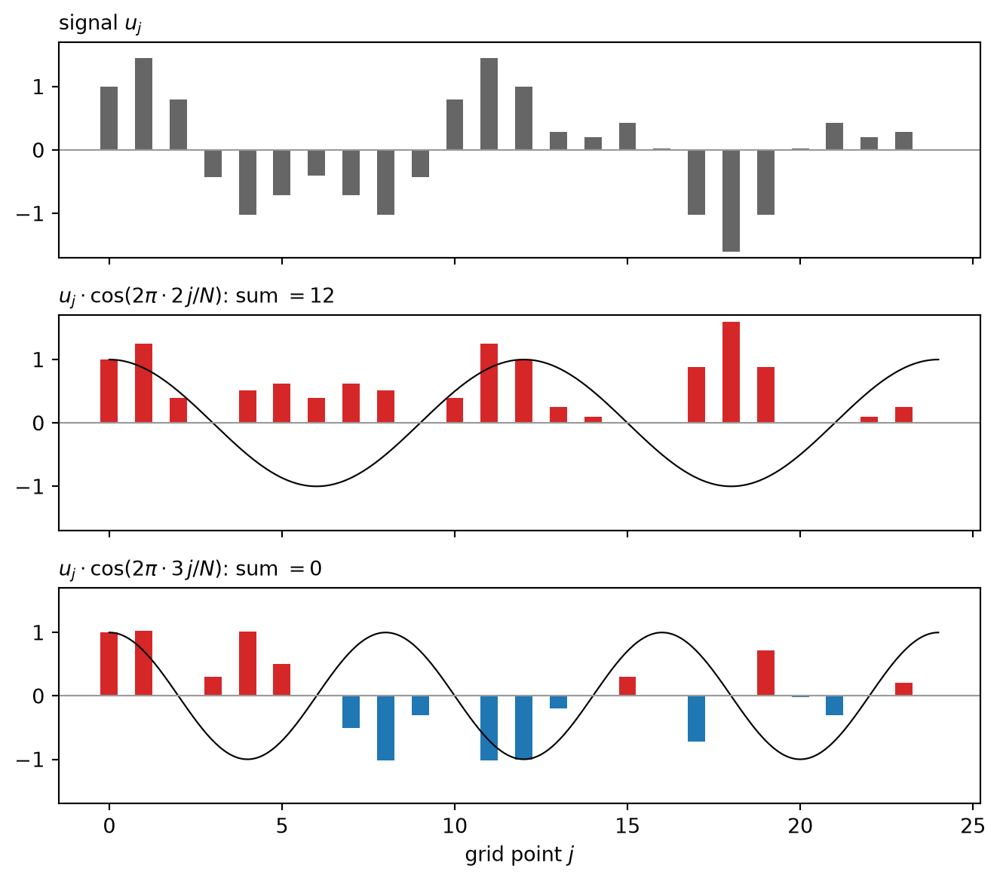
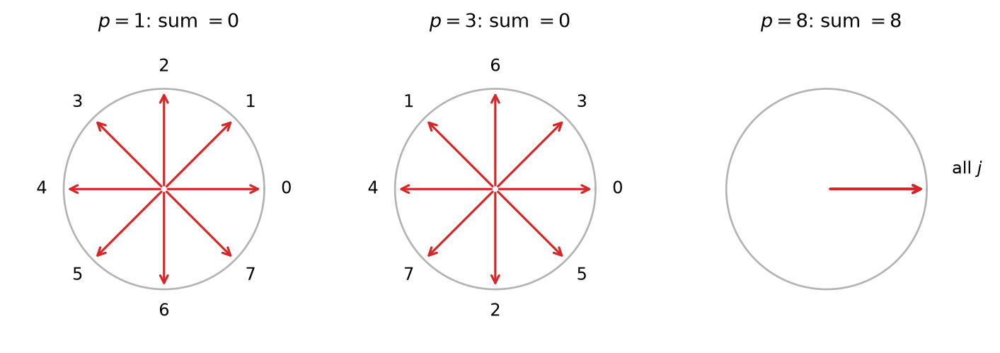
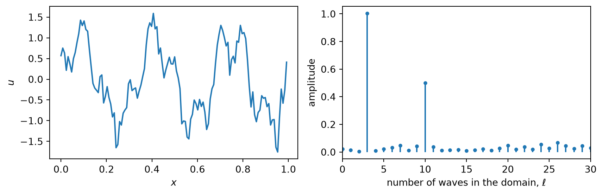
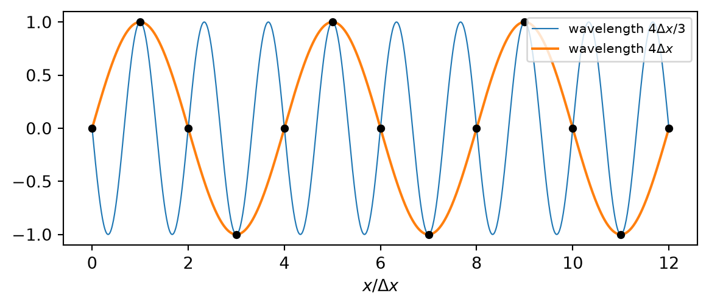
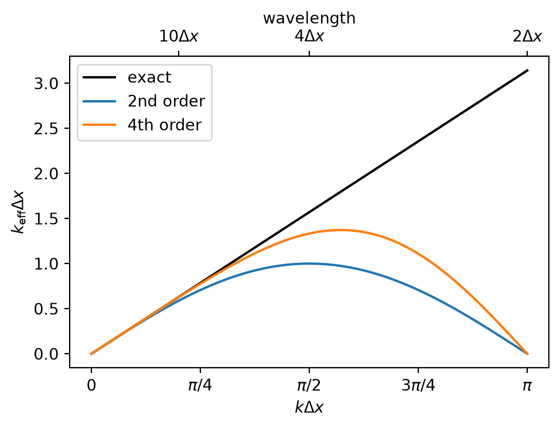

4 The numerical toolbox II: matrices and waves
NoteLearning goals
After this unit you can
- set up the matrix of a finite difference discretization and describe its structure,
- derive the eigenvalues of the model matrix and its condition number,
- explain what the condition number says about the solution of a linear system,
- decompose a signal on a grid into waves with the discrete Fourier transform,
- explain the shortest resolvable wave, aliasing and the effective resolution of a grid.
Two more tools are needed before we turn to differential equations. Matrices describe what a discretization does to all grid points at once. Waves describe what it does to each spatial scale. The two views are closely related: the eigenvectors of the most important matrix of this lecture are waves.
4.1 From a differential equation to a matrix
4.1.1 A model problem
Consider the one-dimensional Poisson equation with homogeneous Dirichlet conditions,
\[ - \frac{\mathrm{d}^2 u}{\mathrm{d}x^2} = f(x), \qquad u(0) = u(L) = 0 . \tag{4.1}\]
We divide \([0, L]\) into \(N + 1\) intervals of width \(h = L / (N + 1)\) with grid points \(x_j = j h\). The values \(u_0 = u_{N+1} = 0\) are known; the unknowns are \(u_1, \dots, u_N\). At each interior point we replace the second derivative by the central difference Equation 3.6:
\[ \frac{-u_{j-1} + 2 u_j - u_{j+1}}{h^2} = f_j, \qquad j = 1, \dots, N . \]
These are \(N\) linear equations for \(N\) unknowns. We write them out for \(N = 4\), using \(u_0 = u_5 = 0\) in the first and the last equation:
\[ \begin{aligned} 2 u_1 - u_2 &= h^2 f_1 \\ -u_1 + 2 u_2 - u_3 &= h^2 f_2 \\ -u_2 + 2 u_3 - u_4 &= h^2 f_3 \\ -u_3 + 2 u_4 &= h^2 f_4 \end{aligned} \qquad \Longleftrightarrow \qquad \begin{pmatrix} 2 & -1 & 0 & 0 \\ -1 & 2 & -1 & 0 \\ 0 & -1 & 2 & -1 \\ 0 & 0 & -1 & 2 \end{pmatrix} \begin{pmatrix} u_1 \\ u_2 \\ u_3 \\ u_4 \end{pmatrix} = h^2 \begin{pmatrix} f_1 \\ f_2 \\ f_3 \\ f_4 \end{pmatrix} . \]
In general, discretizing a linear differential equation leads to a linear system
\[ A \vec x = \vec b \]
with as many unknowns as grid points. Because we multiplied each equation by \(h^2\), the factor \(h^2\) now stands on the right hand side: here \(\vec x = (u_1, \dots, u_N)^T\), \(\vec b = h^2 (f_1, \dots, f_N)^T\), and \(A\) is the model matrix
\[ A = \begin{pmatrix} 2 & -1 & & & \\ -1 & 2 & -1 & & \\ & \ddots & \ddots & \ddots & \\ & & -1 & 2 & -1 \\ & & & -1 & 2 \end{pmatrix} . \tag{4.2}\]
Row \(j\) of the matrix is the stencil of the difference formula, centred on the diagonal. \(A\) accompanies us through the units on elliptic and parabolic problems. The rest of this section works out three of its properties, each of which matters later:
- Sparsity (Section 4.1.2): how much memory and work a solver needs.
- Symmetry and definiteness (Section 4.1.3): whether \(A \vec x = \vec b\) has exactly one solution, and which solvers we may use.
- Eigenvalues and eigenvectors (Section 4.1.4): explicit formulas for all \(N\) of them. They give the definiteness, the matrix norm and the condition number (Section 4.2), and they connect the matrix to waves (Section 4.3).
4.1.2 Sparsity
Each row has at most three non-zero entries, because each grid point is coupled only to its neighbours. Of the \(N^2\) entries only \(3N - 2\) are non-zero. Such a matrix is sparse. Sparse matrices are stored and processed without their zeros, for example with scipy.sparse. For a model with \(10^8\) grid points this is the difference between possible and impossible: the full matrix would have \(10^{16}\) entries.
4.1.3 Symmetry and definiteness
The goal of this subsection: show that \(A\) is symmetric and positive definite, and see what this means. The definiteness tells us whether \(A \vec x = \vec b\) has exactly one solution, and the fastest solvers for large systems only work for such matrices (Chapter 11).
\(A\) is symmetric, \(A = A^T\): the entry in row \(i\) and column \(j\) equals the entry in row \(j\) and column \(i\). The reason is that the stencil is symmetric: point \(j\) couples to its left neighbour with the same weight, \(-1\), as to its right neighbour.
The definiteness of a symmetric matrix is the sign of its quadratic form, the number
\[ q(\vec x) = \vec x^T A \vec x = \sum_{i=1}^{N} \sum_{j=1}^{N} x_i \, a_{ij} \, x_j \]
that the matrix assigns to every vector \(\vec x\). There are five cases:
| \(q(\vec x)\) for all \(\vec x \ne 0\) | the matrix is |
|---|---|
| \(> 0\) | positive definite |
| \(\ge 0\), and \(= 0\) for some \(\vec x \ne 0\) | positive semidefinite |
| \(< 0\) | negative definite |
| \(\le 0\), and \(= 0\) for some \(\vec x \ne 0\) | negative semidefinite |
| \(> 0\) for some \(\vec x\), \(< 0\) for others | indefinite |
For \(N = 2\) the quadratic form is a surface over the \((x_1, x_2)\) plane, and the cases can be seen (Figure 4.1). A positive definite matrix gives a bowl with its only minimum at the origin, a negative definite matrix an upside-down bowl, an indefinite matrix a saddle. A semidefinite matrix gives a trough: along one direction the surface stays at zero.
How do we determine the definiteness? There are two ways.
By rewriting the quadratic form as a sum of squares. For the model matrix with \(N = 3\) we first multiply out, row by row,
\[ \vec x^T A \vec x = x_1 (2 x_1 - x_2) + x_2 (-x_1 + 2 x_2 - x_3) + x_3 (-x_2 + 2 x_3) = 2 x_1^2 + 2 x_2^2 + 2 x_3^2 - 2 x_1 x_2 - 2 x_2 x_3 . \]
Now we split each \(2 x_j^2\) into \(x_j^2 + x_j^2\) and group the terms so that each mixed term \(-2 x_j x_{j+1}\) completes a binomial, \(x_j^2 - 2 x_j x_{j+1} + x_{j+1}^2 = (x_j - x_{j+1})^2\):
\[ \vec x^T A \vec x = x_1^2 + \underbrace{(x_1^2 - 2 x_1 x_2 + x_2^2)}_{(x_1 - x_2)^2} + \underbrace{(x_2^2 - 2 x_2 x_3 + x_3^2)}_{(x_2 - x_3)^2} + x_3^2 . \]
The same works for every \(N\):
\[ \vec x^T A \vec x = x_1^2 + \sum_{j=1}^{N-1} (x_j - x_{j+1})^2 + x_N^2 . \tag{4.3}\]
A sum of squares cannot be negative. It is zero only if every square is zero: \(x_1 = 0\), then \(x_2 = x_1 = 0\), and so on, so \(\vec x = 0\). Hence \(A\) is positive definite.
Equation 4.3 also shows why. The squares are differences of neighbouring values, the discrete version of \(\int (u')^2 \, \mathrm{d}x\). The two single squares \(x_1^2\) and \(x_N^2\) come from the first and last rows, where the Dirichlet values \(u_0 = u_{N+1} = 0\) were used. Without them, as for Neumann or periodic boundaries, a constant vector \(x_1 = \dots = x_N\) gives \(q = 0\): the matrix is then only positive semidefinite, like the trough in Figure 4.1.
By the eigenvalues. For a symmetric matrix the signs of the eigenvalues decide: positive definite means all eigenvalues are positive, negative definite all negative, semidefinite that some are zero, and indefinite that there are eigenvalues of both signs. Figure 4.1 gives the eigenvalues for each case. Why this works is shown in Section 4.1.4 (Equation 4.5), where we also confirm the result for \(A\) with its eigenvalues. For large matrices this is the practical test, because eigenvalues can be computed even when the quadratic form cannot be rearranged by hand.
Why we want positive definite. A positive definite matrix is invertible. If \(A \vec x = \vec 0\) for some \(\vec x \ne \vec 0\), then \(\vec x^T A \vec x = 0\), which a positive definite matrix does not allow. So \(A \vec x = \vec b\) has exactly one solution for every \(\vec b\): the discrete problem is well-posed in the sense of Chapter 1. For Neumann or periodic boundaries the constant vector gives \(A \vec x = \vec 0\), and the solution is fixed only up to a constant.
The sign matters. The second difference itself, \((u_{j-1} - 2 u_j + u_{j+1}) / h^2\), has the matrix \(-A / h^2\), which is negative definite. This is why we wrote the Poisson equation with a minus sign, \(-u'' = f\): then the matrix is positive definite. Matrices from diffusion problems have this property, and the most efficient solvers rely on it (Chapter 11).
4.1.4 Eigenvalues and eigenvectors
The goal of this subsection: formulas for all \(N\) eigenvalues \(\lambda_m\) and eigenvectors \(\vec v_m\) of the model matrix. The result is Equation 4.6 at the end. We use it three times: to confirm that \(A\) is positive definite (below), to compute the norm and the condition number of \(A\) (Section 4.2), and to connect the matrix to waves (Section 4.3).
Eigenvalues of symmetric matrices. An eigenvector \(\vec v \ne \vec 0\) of a matrix \(A\) is a vector that \(A\) only stretches,
\[ A \vec v = \lambda \vec v , \]
with the eigenvalue \(\lambda\). For a symmetric \(N \times N\) matrix all eigenvalues are real, and there are \(N\) eigenvectors that are orthogonal to each other. We number them \(m = 1, \dots, N\) and scale them to length 1, so that
\[ \vec v_m^T \vec v_n = \begin{cases} 1 & \text{if } m = n , \\ 0 & \text{otherwise.} \end{cases} \tag{4.4}\]
Such vectors are called orthonormal. Any vector can be written as a combination \(\vec x = \sum_m c_m \vec v_m\), and by Equation 4.4 the coefficients are \(c_m = \vec v_m^T \vec x\) and the length is \(\|\vec x\|_2^2 = \vec x^T \vec x = \sum_m c_m^2\). Applying \(A\) multiplies each part by its eigenvalue, \(A \vec x = \sum_m \lambda_m c_m \vec v_m\). This is the one property of eigenvectors that everything below uses.
The eigenvalue test for definiteness. In the product \(\vec x^T A \vec x\) only the terms with \(m = n\) survive, by Equation 4.4:
\[ \vec x^T A \vec x = \sum_m \sum_n c_m c_n \lambda_n \, \vec v_m^T \vec v_n = \sum_m \lambda_m c_m^2 . \tag{4.5}\]
If all \(\lambda_m > 0\), this is positive for every \(\vec x \ne \vec 0\). If one \(\lambda_m < 0\), the choice \(\vec x = \vec v_m\) gives \(q = \lambda_m < 0\). For example, \(\begin{pmatrix} 1 & 2 \\ 2 & 1 \end{pmatrix}\) has the eigenvalues \(3\) and \(-1\): for \(\vec x = (1, 1)\) the quadratic form is \(1 + 4 + 1 = 6 > 0\), for \(\vec x = (1, -1)\) it is \(1 - 4 + 1 = -2 < 0\), the saddle in Figure 4.1.
Now to the eigenvalues of \(A\) itself. We find them in three steps.
Step 1: a guess from the continuous problem. Note that we now solve a different problem than Equation 4.1. The solution \(u\) of the Poisson equation depends on \(f\); an eigenvector does not involve \(f\) at all. The continuous counterpart of \(A \vec v = \lambda \vec v\) is the eigenvalue problem
\[ - \frac{\mathrm{d}^2 v}{\mathrm{d}x^2} = \mu \, v, \qquad v(0) = v(L) = 0 . \]
Its solutions are sines: for \(v(x) = \sin (k x)\), differentiating twice gives \(-v'' = k^2 \sin (k x)\), so \(\mu = k^2\), and \(v(L) = 0\) requires \(k = m \pi / L\) with an integer \(m\): \(m\) half waves fit into the domain. Since \(A\) is \(-\mathrm{d}^2/\mathrm{d}x^2\) multiplied by \(h^2\), we expect its eigenvectors to be the same sines sampled on the grid, and try
\[ v_j = \sin (j \theta), \qquad j = 1, \dots, N . \]
\(\theta\) is an angle, the phase by which the sine advances from one grid point to the next. At the grid points \(x_j = j h\) a sine wave \(\sin (k x)\) takes the values \(\sin (k \, j h) = \sin (j \theta)\), so
\[ \theta = k h , \]
the wavenumber times the grid spacing, a number without unit. A long wave advances little from point to point, \(\theta\) small; the shortest wave that the grid can show advances by almost \(\pi\). Which values of \(\theta\) are allowed is decided in step 3.
Step 2: the interior rows give the eigenvalue. Row \(j\) of \(A \vec v\) is
\[ (A \vec v)_j = -\sin \big( (j - 1) \theta \big) + 2 \sin (j \theta) - \sin \big( (j + 1) \theta \big) . \]
The addition theorems \(\sin(a \mp b) = \sin a \cos b \mp \cos a \sin b\) give, when added, \(\sin(a - b) + \sin(a + b) = 2 \sin a \cos b\). With \(a = j \theta\) and \(b = \theta\) the two outer terms combine to \(-2 \sin (j \theta) \cos \theta\), and
\[ (A \vec v)_j = 2 \sin (j \theta) - 2 \sin (j \theta) \cos \theta = (2 - 2 \cos \theta) \, v_j . \]
Every row gives the same factor \(2 - 2 \cos \theta\), and this factor is the eigenvalue, for any \(\theta\) so far. (Section 4.3.1 repeats this step in one line with the complex exponential.)
Step 3: the boundary rows fix \(\theta\). The first and the last row lack one neighbour. The formula of step 2 holds for them only if the missing values vanish, like the Dirichlet values \(u_0 = u_{N+1} = 0\) at the boundary nodes \(j = 0\) and \(j = N + 1\). At the left, \(v_0 = \sin 0 = 0\) holds automatically. At the right, \(v_{N+1} = \sin \big( (N + 1) \theta \big) = 0\) requires \((N + 1) \theta = m \pi\) with an integer \(m\), so \(\theta = m \pi / (N + 1)\). The values \(m = 1, \dots, N\) give \(N\) different eigenvectors; \(m = 0\) and \(m = N + 1\) give \(\vec v = \vec 0\), and larger \(m\) repeat the same vectors. With \(N\) eigenvectors for an \(N \times N\) matrix, we have found all of them.
Three remarks on the result. The second form of \(\lambda_m\) follows from \(\cos \theta = 1 - 2 \sin^2 (\theta / 2)\). The factor \(\sqrt{2 / (N + 1)}\) scales the eigenvectors to length 1, because \(\sum_{j=1}^{N} \sin^2 (j \theta_m) = (N + 1)/2\); any multiple of an eigenvector is also an eigenvector, so this factor does not change \(\lambda_m\). And the result agrees with the continuous problem: there are \(N + 1\) intervals, so \(h = L / (N + 1)\), and the sine with \(k = m \pi / L\) has the phase step
\[ \theta = k h = \frac{m \pi}{L} \cdot \frac{L}{N + 1} = \frac{m \pi}{N + 1} = \theta_m . \]
import numpy as np
import matplotlib.pyplot as plt
from scipy.sparse import diags
N = 20
A = diags([-1.0, 2.0, -1.0], [-1, 0, 1], shape=(N, N))
eigenvalues, eigenvectors = np.linalg.eigh(A.toarray())
fig, ax = plt.subplots(figsize=(6.5, 3))
j = np.arange(1, N + 1)
for index in [0, 1, N - 1]:
v = eigenvectors[:, index]
ax.plot(j, v * np.sign(v[0]), "o-", ms=3, label=rf"$m = {index + 1}$, $\lambda = {eigenvalues[index]:.3f}$")
ax.set_xlabel("grid point $j$")
ax.set_xticks([1, 5, 10, 15, 20])
ax.legend(fontsize=8)
plt.show()
What the eigenvectors are good for. They solve Equation 4.1 without a solver. Write the right hand side in eigenvectors, \(\vec b = \sum_m \beta_m \vec v_m\) with \(\beta_m = \vec v_m^T \vec b\). Then
\[ \vec u = \sum_{m=1}^{N} \frac{\beta_m}{\lambda_m} \, \vec v_m \tag{4.7}\]
solves \(A \vec u = \vec b\), because \(A\) multiplies each \(\vec v_m\) by \(\lambda_m\) and so restores \(\beta_m\). The solution of the discrete Poisson problem is therefore a sum of the sine waves, and each wave of the right hand side is divided by its eigenvalue. This is the discrete form of solving the Poisson equation with a Fourier sine series: with \(\vec b = h^2 \vec f\) and, for long waves, \(\lambda_m \approx \theta_m^2 = (k h)^2\), the factor is \(h^2 / \lambda_m \approx 1 / k^2\), exactly the factor \(1 / \mu\) of the continuous problem.
Equation 4.7 also shows where errors are amplified. An error in the right hand side is divided by \(\lambda_m\) as well. In the longest wave, \(m = 1\), it is divided by the smallest eigenvalue \(\lambda_1\) and amplified most; in the shortest, \(m = N\), by the largest \(\lambda_N\). The ratio of the two, \(\lambda_N / \lambda_1\), is the condition number of the next section.
4.2 Norms and the condition number
The question of this section: if the right hand side \(\vec b\) contains an error, for example round-off or a measurement error, how large is the resulting error in the solution of \(A \vec x = \vec b\)? To answer it we need a measure for the size of vectors and of matrices (Section 4.2.1). With it we derive a bound for the error, the condition number (Section 4.2.2), and evaluate it for the model matrix (Section 4.2.3).
4.2.1 Norms
The size of a vector is measured by a norm, for example the Euclidean norm and the maximum norm,
\[ \|\vec x\|_2 = \sqrt{\sum_j x_j^2}, \qquad \|\vec x\|_\infty = \max_j |x_j| . \]
Norms are what we mean by “the error” of a solution on a grid. The norm of a matrix is the largest factor by which it can stretch a vector,
\[ \|A\| = \max_{\vec x \ne 0} \frac{\|A \vec x\|}{\|\vec x\|} , \qquad \text{so that} \qquad \|A \vec x\| \le \|A\| \, \|\vec x\| . \tag{4.8}\]
The 2-norm of a symmetric matrix. For the Euclidean norm, the matrix norm follows from the eigenvalues. We use the orthonormal eigenvectors of Section 4.1.4: write \(\vec x = \sum_m c_m \vec v_m\), so that \(\|\vec x\|_2^2 = \sum_m c_m^2\) and \(A \vec x = \sum_m \lambda_m c_m \vec v_m\). Then
\[ \|A \vec x\|_2^2 = \sum_m \lambda_m^2 c_m^2 \le \max_m \lambda_m^2 \sum_m c_m^2 = \max_m \lambda_m^2 \, \|\vec x\|_2^2 . \]
Each part of \(\vec x\) is stretched by its own eigenvalue, so the stretch can be no larger than the largest \(|\lambda_m|\). It reaches that value for \(\vec x\) equal to the corresponding eigenvector. The inverse matrix has the same eigenvectors and the eigenvalues \(1 / \lambda_m\), because \(A \vec v_m = \lambda_m \vec v_m\) gives \(A^{-1} \vec v_m = \vec v_m / \lambda_m\); its largest stretch is \(1 / \min_m |\lambda_m|\).
4.2.2 The condition number
Let \(\vec b\) be perturbed by \(\delta \vec b\), and let \(\delta \vec x\) be the resulting change of the solution. Subtracting \(A \vec x = \vec b\) from \(A (\vec x + \delta \vec x) = \vec b + \delta \vec b\) gives \(A \, \delta \vec x = \delta \vec b\), hence
\[ \delta \vec x = A^{-1} \delta \vec b \quad \Longrightarrow \quad \|\delta \vec x\| \le \|A^{-1}\| \, \|\delta \vec b\| , \]
using Equation 4.8. The same inequality applied to \(\vec b = A \vec x\) gives \(\|\vec b\| \le \|A\| \, \|\vec x\|\), or \(1 / \|\vec x\| \le \|A\| / \|\vec b\|\). Multiplying the two inequalities,
\[ \frac{\|\delta \vec x\|}{\|\vec x\|} \le \underbrace{\|A\| \, \|A^{-1}\|}_{\kappa(A)} \, \frac{\|\delta \vec b\|}{\|\vec b\|} . \tag{4.10}\]
The factor \(\kappa(A) = \|A\| \, \|A^{-1}\|\) is the condition number of the matrix. It bounds the amplification of relative errors, and is therefore the condition number of Chapter 1 for the problem “solve a linear system”. The bound is reached: put the solution in the eigenvector with the largest eigenvalue, \(\vec x = \vec v_{\max}\), so \(\vec b = \lambda_{\max} \vec x\) is large, and the error in the one with the smallest, \(\delta \vec b \propto \vec v_{\min}\), so \(\delta \vec x = \delta \vec b / \lambda_{\min}\) is large.
4.2.3 The condition number of the model matrix
We now insert the eigenvalues Equation 4.6 into Equation 4.11, for large \(N\). The largest eigenvalue is \(\lambda_N\). Its angle \(\theta_N = N \pi / (N + 1)\) is close to \(\pi\), so \(\cos \theta_N \approx -1\) and
\[ \lambda_{\max} = \lambda_N = 2 - 2 \cos \theta_N \approx 4 . \]
The smallest eigenvalue is \(\lambda_1\). Its angle \(\theta_1 = \pi / (N + 1)\) is small, and with the Taylor expansion \(\cos \theta \approx 1 - \theta^2 / 2\),
\[ \lambda_{\min} = \lambda_1 = 2 - 2 \cos \theta_1 \approx 2 - 2 \Big( 1 - \frac{\theta_1^2}{2} \Big) = \theta_1^2 = \frac{\pi^2}{(N + 1)^2} . \]
The computation confirms the formulas:
for N in [10, 100, 1000]:
A = diags([-1.0, 2.0, -1.0], [-1, 0, 1], shape=(N, N))
eigenvalues = np.linalg.eigvalsh(A.toarray())
m = np.arange(1, N + 1)
exact = 2 - 2 * np.cos(m * np.pi / (N + 1))
print(f"N = {N:4d}: max. deviation from the formula {abs(eigenvalues - exact).max():.1e},"
f" condition number {eigenvalues[-1] / eigenvalues[0]:9.1f},"
f" estimate {4 * (N + 1)**2 / np.pi**2:9.1f},"
f" non-zeros {A.nnz} of {N * N}")N = 10: max. deviation from the formula 4.4e-16, condition number 48.4, estimate 49.0, non-zeros 28 of 100
N = 100: max. deviation from the formula 2.7e-15, condition number 4133.6, estimate 4134.3, non-zeros 298 of 10000
N = 1000: max. deviation from the formula 3.6e-15, condition number 406095.0, estimate 406095.7, non-zeros 2998 of 1000000Refining the grid makes the discretization more accurate and the linear system harder to solve. This conflict is the reason why solvers for linear systems take up two units of this lecture (Chapter 10, Chapter 11).
4.3 Fourier analysis
The eigenvectors of the model matrix are sine waves (Equation 4.6). This is no accident, and this section turns it into a general tool. We want to answer three questions:
- How do we split any grid function into waves? (Section 4.3.3)
- Which waves can a grid represent at all? (Section 4.3.4)
- What does a difference formula do to each wave? The answer connects back to the eigenvalues \(\lambda_m\). (Section 4.3.5, Section 4.3.6)
The tool for all three is the complex exponential, which we introduce first (Section 4.3.1).
4.3.1 The complex exponential
Fourier analysis is written with the complex exponential \(e^{i\varphi}\). It looks more difficult than sine and cosine, but it is only a compact way to handle both at once. Everything follows from one rule, \(i^2 = -1\).
Euler’s formula. A complex number \(z = a + i b\) is a point in the plane, with the real part \(a\) on the horizontal and the imaginary part \(b\) on the vertical axis. The complex exponential is the point on the unit circle at angle \(\varphi\) (Figure 4.3):
\[ e^{i \varphi} = \cos \varphi + i \sin \varphi . \tag{4.13}\]
To see why, insert \(x = i\varphi\) into the Taylor series \(e^x = 1 + x + x^2/2! + x^3/3! + \dots\) and use \(i^2 = -1\), \(i^3 = -i\), \(i^4 = 1\):
\[ \begin{aligned} e^{i\varphi} &= 1 + i\varphi - \frac{\varphi^2}{2!} - i \frac{\varphi^3}{3!} + \frac{\varphi^4}{4!} + \dots \\ &= \Big( 1 - \frac{\varphi^2}{2!} + \frac{\varphi^4}{4!} - \dots \Big) + i \Big( \varphi - \frac{\varphi^3}{3!} + \dots \Big) = \cos \varphi + i \sin \varphi . \end{aligned} \]
The even powers are real and form the series of the cosine, the odd powers are imaginary and form the series of the sine. Replacing \(\varphi\) by \(-\varphi\) changes only the sign of the sine, \(e^{-i\varphi} = \cos \varphi - i \sin \varphi\). Adding and subtracting the two gives
\[ \cos \varphi = \frac{e^{i\varphi} + e^{-i\varphi}}{2} , \qquad \sin \varphi = \frac{e^{i\varphi} - e^{-i\varphi}}{2 i} : \tag{4.14}\]
a real wave is the sum of two rotations in opposite directions.

Why it makes life easier. Three rules replace the whole collection of trigonometric identities:
- Multiplying adds angles: \(e^{ia} \, e^{ib} = e^{i(a + b)}\). Written out with Equation 4.13, the real and imaginary parts of this one line are the addition theorems for \(\cos(a + b)\) and \(\sin(a + b)\).
- A shift is a multiplication: \(e^{ik(x + \Delta x)} = e^{ikx} \, e^{ik \Delta x}\). Moving a wave by one grid point multiplies it by a fixed factor.
- A derivative is a multiplication: \(\frac{\mathrm{d}}{\mathrm{d}x} e^{ikx} = ik \, e^{ikx}\) and \(\frac{\mathrm{d}^2}{\mathrm{d}x^2} e^{ikx} = -k^2 \, e^{ikx}\).
The last two rules are why waves are the natural test functions for difference formulas (Section 4.3.5): a difference formula is a combination of shifts, so it also just multiplies the wave by a factor.
The model matrix once more. As an example, we repeat step 2 of the eigenvalue computation in Section 4.1.4. Instead of the sine we try \(v_j = e^{ij\theta} = \cos (j\theta) + i \sin (j\theta)\), which carries the cosine and the sine at the same time. This is a trick for the algebra, not a new eigenvector: the sine is its imaginary part. Row \(j\) of \(A \vec v\) is
\[ (A \vec v)_j = -e^{i(j-1)\theta} + 2 e^{ij\theta} - e^{i(j+1)\theta} = e^{ij\theta} \big( 2 - e^{-i\theta} - e^{i\theta} \big) = (2 - 2 \cos \theta) \, v_j , \]
using the shift rule and Equation 4.14. The eigenvalue appears without any addition theorem.
Why does this tell us anything about the sine? The entries of \(A\) are real, so \(A\) acts on the real and the imaginary part separately: \(A \vec v = A \vec{c} + i \, A \vec{s}\) with \(c_j = \cos (j\theta)\) and \(s_j = \sin (j\theta)\). The right hand side is \((2 - 2\cos\theta) \, (\vec c + i \vec s)\), with a real factor. Comparing real and imaginary parts gives \((A \vec c)_j = (2 - 2\cos\theta) \, c_j\) and \((A \vec s)_j = (2 - 2\cos\theta) \, s_j\): one computation with the complex exponential does the work of two, one for the cosine and one for the sine.
The boundary conditions come in at the end. The unknowns sit at the interior nodes \(j = 1, \dots, N\); the boundary nodes \(j = 0\) (left) and \(j = N + 1\) (right) carry the Dirichlet values \(u_0 = u_{N+1} = 0\), so an eigenvector must vanish there. \(e^{ij\theta}\) alone does not, its modulus is one at every node. But \(e^{-ij\theta}\) has the same eigenvalue, because \(\cos(-\theta) = \cos \theta\), and so has every combination of the two. By Equation 4.14 the combination \(\sin (j\theta) = \big( e^{ij\theta} - e^{-ij\theta} \big) / (2i)\) is zero at the left boundary node, \(j = 0\); the cosine is not, since \(\cos 0 = 1\). At the right boundary node, \(j = N + 1\), we need \(\sin \big( (N + 1) \theta \big) = 0\), that is \((N + 1) \, \theta = m \pi\) or \(\theta = m\pi/(N + 1)\), as in Equation 4.6. Remember that \(\theta\) is not a node but the phase step from one node to the next: the right boundary only admits the waves for which a whole number \(m\) of half waves fits between the two boundary nodes.
4.3.2 Waves on a grid
The eigenvectors of Section 4.1.4 were sines on a domain with Dirichlet boundaries. From here on we use a periodic domain, as on a latitude circle, because waves are simplest there. Two things change compared with Section 4.1.4, and it helps to keep them apart:
| model matrix (Section 4.1.4) | periodic grid (this section) | |
|---|---|---|
| grid points | \(x_j = j h\), \(j = 1, \dots, N\), plus two boundary nodes | \(x_j = j \Delta x\), \(j = 0, \dots, N - 1\), no boundary |
| waves | sines, \(m\) half waves, \(k = m \pi / L\) | cosines and sines, \(\ell\) whole waves (\(= 2\ell\) half waves), \(k = 2 \pi \ell / L\) |
| index | \(m = 1, \dots, N\) | \(\ell = 0, 1, \dots, N/2\) |
The question. Think of \(N\) values \(u_0, \dots, u_{N-1}\) measured at equally spaced points around a latitude circle, for example the surface temperature at \(N\) stations. Plotted, they look irregular (top panel of Figure 4.4). Fourier analysis asks: which waves is this signal made of, and how strong is each one? A wave here is a pattern that repeats \(\ell\) times around the circle: \(\ell = 1\) is one warm and one cold half, \(\ell = 2\) two of each, and so on. \(\ell = 0\) is the constant part, the mean. The answer, one amplitude for each \(\ell\), is the spectrum of the signal.
Waves on the grid points. The domain has length \(L = N \Delta x\) and the grid points are \(x_j = j \Delta x = j L / N\). A wave with \(\ell\) crests in the domain has the wavenumber \(k_\ell = 2 \pi \ell / L\), and at the grid points
\[ k_\ell x_j = \frac{2 \pi \ell}{L} \cdot \frac{j L}{N} = \frac{2 \pi \ell j}{N} . \]
A wave needs two numbers, its amplitude and its position. We therefore use a cosine and a sine for each \(\ell\), with coefficients \(a_\ell\) and \(b_\ell\): a cosine has its crest at \(x = 0\), a sine a quarter wavelength further on, and the mix of the two places the crest anywhere. The signal is
\[ u_j = a_0 + \sum_{\ell=1}^{N/2} \Big[ a_\ell \cos \frac{2 \pi \ell j}{N} + b_\ell \sin \frac{2 \pi \ell j}{N} \Big] . \tag{4.15}\]
Why only up to \(\ell = N/2\)? \(N\) grid values cannot determine more than \(N\) coefficients, and \(\ell = N/2\) is already the shortest wave, which changes sign from point to point. Shorter waves cannot be told apart from longer ones; this is aliasing, Section 4.3.4.
4.3.3 The discrete Fourier transform
The goal: compute the coefficients \(a_\ell\) and \(b_\ell\) from the data \(u_j\).
The idea: multiply and sum. To find out how much of the wave with \(n\) crests the signal contains, we multiply the data point by point with that wave, the test wave, and add up:
\[ \sum_{j=0}^{N-1} u_j \cos \frac{2 \pi n j}{N} . \]
Figure 4.4 shows what happens. The signal there contains a cosine with \(n = 2\) crests (amplitude 1) and a sine with 5 crests (amplitude 0.6).
- Multiplied with the matching test wave, \(n = 2\), the products are mostly positive: where the wave is positive, the test wave is positive too, and where it is negative, so is the test wave. The products add up, here to 12.
- Multiplied with a test wave that does not match, \(n = 3\), the products are positive at some points and negative at others, and they cancel. The sum is zero.
So the sum picks out exactly the part of the signal that has the shape of the test wave, and ignores all other waves. This is the whole idea of the Fourier transform.

From the sum to the coefficient. Put the signal Equation 4.15 into the sum. All waves except the matching one drop out (why, we show next), and what is left is the matching cosine times itself:
\[ \sum_{j=0}^{N-1} u_j \cos \frac{2 \pi n j}{N} = a_n \sum_{j=0}^{N-1} \cos^2 \frac{2 \pi n j}{N} = a_n \, \frac{N}{2} , \]
because \(\cos^2 \alpha = \tfrac12 (1 + \cos 2\alpha)\): on average the square is \(\tfrac12\), so \(N\) terms give \(N/2\) (for \(0 < n < N/2\)).
Let us check this with Figure 4.4. There \(N = 24\) and the test wave has \(n = 2\), so the formula predicts the sum \(a_2 \cdot 24/2 = 12 \, a_2\). The figure shows that the sum is 12. Hence \(12 \, a_2 = 12\), or \(a_2 = 1\): exactly the amplitude of the cosine we built into the signal. The method recovers it.
Solving for the coefficient, and the same with a sine as test wave,
\[ a_n = \frac{2}{N} \sum_{j=0}^{N-1} u_j \cos \frac{2 \pi n j}{N} , \qquad b_n = \frac{2}{N} \sum_{j=0}^{N-1} u_j \sin \frac{2 \pi n j}{N} , \qquad 0 < n < \frac{N}{2} . \tag{4.16}\]
For \(n = 0\) the test wave is the constant 1, and \(a_0 = \frac1N \sum_j u_j\) is the mean. This is the discrete Fourier transform (DFT) in real form. It is the same idea as \(\beta_m = \vec v_m^T \vec b\) in Equation 4.7: the waves are orthogonal vectors, and the coefficient of each is the product of the data with that wave.
Why the other waves cancel. The product of two waves with \(n\) and \(\ell\) crests is, by the product rules for cosine and sine, a combination of waves with \(n + \ell\) and \(n - \ell\) crests. So everything reduces to one question: why is the sum of a wave over all grid points zero? Here the complex exponential helps. The values \(e^{2 \pi i \, p j / N}\), \(j = 0, \dots, N - 1\), are points on the unit circle, \(p/N\) of a turn apart (Figure 4.5). For \(p = 1\) they are the corners of a regular polygon, spread evenly around the circle. Added as arrows from the origin, they balance: the sum is zero. Its real part is the sum of the cosines and its imaginary part the sum of the sines, so both are zero. For \(p = 3\) the points are visited in a different order, but they are still spread evenly, and the sum is again zero. Only if \(p\) is a multiple of \(N\) does every point land on 1, and the sum is \(N\):
\[ \sum_{j=0}^{N-1} e^{2 \pi i \, p j / N} = \begin{cases} N & \text{if } p = 0, \pm N, \pm 2N, \dots , \\ 0 & \text{otherwise.} \end{cases} \tag{4.17}\]

The arrows balance because turning the whole picture by one step, multiplying every point by \(q = e^{2 \pi i p / N}\), only renumbers the points and leaves the sum \(S\) unchanged: \(q S = S\). With \(q \ne 1\) this is possible only for \(S = 0\). (Written out, this is the geometric series \(\sum_j q^j = (1 - q^N)/(1 - q)\) with \(q^N = 1\).)
The complex form. The two real sums of Equation 4.16 can be packed into one complex number, with \(e^{-i\alpha} = \cos \alpha - i \sin \alpha\):
\[ \hat u_n = \frac{1}{N} \sum_{j=0}^{N-1} u_j \, e^{-2 \pi i \, n j / N} = \frac{1}{N} \sum_{j} u_j \cos \frac{2 \pi n j}{N} - \frac{i}{N} \sum_{j} u_j \sin \frac{2 \pi n j}{N} = \frac{a_n - i \, b_n}{2} . \tag{4.18}\]
This is the DFT as it is usually written, and as NumPy computes it. Nothing new happens in it: the real part holds the cosine coefficient, the imaginary part the sine coefficient. The amplitude of the wave, \(\sqrt{a_n^2 + b_n^2}\), is therefore
\[ \sqrt{a_n^2 + b_n^2} = 2 \, |\hat u_n| , \]
and the angle of \(\hat u_n\) in the complex plane gives the position of the crest. Why the factor 2? A real wave is the sum of two rotations, \(e^{+i\alpha}\) and \(e^{-i\alpha}\) (Equation 4.14), and \(\hat u_n\) measures only one of them; the other half sits in \(\hat u_{N-n}\), the wave turning the other way. Conversely, the signal is rebuilt from its amplitudes by
\[ u_j = \sum_{\ell=0}^{N-1} \hat u_\ell \, e^{2 \pi i \, \ell j / N} , \tag{4.19}\]
the inverse DFT, which is Equation 4.15 in complex form.
A worked example. Four values, \(N = 4\), \(u = (1, 2, 1, 0)\). The test waves with \(n = 1\) are \(\cos (\pi j / 2) = (1, 0, -1, 0)\) and \(\sin (\pi j / 2) = (0, 1, 0, -1)\). Multiply and sum:
\[ \begin{aligned} a_0 &= \tfrac14 (1 + 2 + 1 + 0) = 1 , \\ a_1 &= \tfrac24 (1 \cdot 1 + 2 \cdot 0 + 1 \cdot (-1) + 0 \cdot 0) = 0 , \\ b_1 &= \tfrac24 (1 \cdot 0 + 2 \cdot 1 + 1 \cdot 0 + 0 \cdot (-1)) = 1 . \end{aligned} \]
So \(u_j = 1 + \sin (\pi j / 2)\): the mean 1 plus one sine wave of amplitude 1. Check: \(j = 0, 1, 2, 3\) gives \(1, 2, 1, 0\). In complex form, \(\hat u_1 = (a_1 - i b_1)/2 = -0.5 i\), and \(2 |\hat u_1| = 1\) is the amplitude. NumPy gives the same:
u = np.array([1.0, 2.0, 1.0, 0.0])
N = len(u)
j = np.arange(N)
# by hand: multiply with the test waves and sum
a1 = 2 / N * np.sum(u * np.cos(2 * np.pi * 1 * j / N))
b1 = 2 / N * np.sum(u * np.sin(2 * np.pi * 1 * j / N))
print("mean", u.mean(), " a1", round(a1, 12), " b1", round(b1, 12))
# with the FFT: rfft returns N * u_hat for n = 0, ..., N/2
u_hat = np.fft.rfft(u) / N
print("u_hat", u_hat, " amplitude of n = 1:", 2 * abs(u_hat[1]))mean 1.0 a1 0.0 b1 1.0
u_hat [1.+0.j 0.-0.5j 0.+0.j ] amplitude of n = 1: 1.0In practice. Computed directly, Equation 4.18 costs \(N\) operations for each of the \(N\) amplitudes, \(N^2\) in total. The fast Fourier transform (FFT) obtains the same numbers with \(O(N \log N)\) operations: for \(N = 10^6\) about \(2 \times 10^7\) instead of \(10^{12}\). In NumPy, np.fft.rfft(u) returns \(N \hat u_n\) for \(n = 0, \dots, N/2\), without the factor \(1/N\). The amplitude spectrum of a real signal is therefore 2 * abs(np.fft.rfft(u)) / N (and the mean is abs(np.fft.rfft(u)[0]) / N, without the 2). Figure 4.6 applies this to a noisy signal.
N, L = 128, 1.0
x = np.arange(N) * L / N
rng = np.random.default_rng(1)
signal = np.sin(2 * np.pi * 3 * x) + 0.5 * np.cos(2 * np.pi * 10 * x) + 0.2 * rng.standard_normal(N)
amplitude = 2 * abs(np.fft.rfft(signal)) / N
ell = np.fft.rfftfreq(N, d=1 / N) # number of waves in the domain
fig, (ax1, ax2) = plt.subplots(1, 2, figsize=(9, 3))
ax1.plot(x, signal)
ax1.set_xlabel("$x$")
ax1.set_ylabel("$u$")
ax2.stem(ell, amplitude, basefmt=" ", markerfmt=".")
ax2.set_xlim(0, 30)
ax2.set_xlabel(r"number of waves in the domain, $\ell$")
ax2.set_ylabel("amplitude")
plt.tight_layout()
plt.show()
4.3.4 The shortest wave and aliasing
The goal: find the shortest wave a grid can represent, and see what happens to shorter waves.
The shortest wave that a grid can represent has one crest and one trough on two neighbouring points. Its wavelength is \(2 \Delta x\) and its wavenumber is the Nyquist wavenumber \(k_{\max} = \pi / \Delta x\).
What happens to a wave with a larger wavenumber? Consider the wavenumbers \(k\) and \(k + 2 \pi / \Delta x\). At the grid points \(x_j = j \Delta x\)
\[ e^{i (k + 2 \pi / \Delta x) \, x_j} = e^{i k x_j} \, e^{2 \pi i \, j} = e^{i k x_j} , \]
because \(e^{2 \pi i j} = 1\) for every integer \(j\). The two waves have the same values at all grid points. On the grid they cannot be distinguished. A wave that is shorter than \(2 \Delta x\) therefore does not disappear when it is sampled: it is mistaken for a longer wave with a wavenumber in the range \(|k| \le k_{\max}\). This is aliasing.
In Figure 4.7 a wave with wavelength \(\tfrac43 \Delta x\), that is \(k = \tfrac32 \pi / \Delta x\), appears as the wave with \(k - 2 \pi / \Delta x = -\tfrac12 \pi / \Delta x\), which has the wavelength \(4 \Delta x\).

Aliasing matters in nonlinear models. The product of two waves is
\[ e^{i k_1 x} \, e^{i k_2 x} = e^{i (k_1 + k_2) x} , \]
a wave with the wavenumber \(k_1 + k_2\). A nonlinear term such as \(u \, \partial u / \partial x\) therefore creates shorter waves from longer ones. If \(k_1 + k_2\) exceeds \(k_{\max}\), the grid misrepresents the product as a longer wave, and energy appears at scales where it does not belong. This can make a model unstable (Chapter 17).
4.3.5 Why waves are the natural test for a numerical method
The goal: find out how accurately a difference formula treats a wave of a given length. For a linear equation with constant coefficients each wave evolves independently of the others. It therefore suffices to understand what a numerical method does to a single wave \(e^{ikx}\), and that is easy to compute.
The exact derivative of a wave is
\[ \frac{\mathrm{d}}{\mathrm{d}x} e^{ikx} = i k \, e^{ikx} : \]
the wave is multiplied by \(ik\). For the central difference Equation 3.5 we factor out \(e^{ikx}\) and use \(e^{i\alpha} - e^{-i\alpha} = 2 i \sin \alpha\):
\[ \frac{e^{ik(x + \Delta x)} - e^{ik(x - \Delta x)}}{2 \Delta x} = \frac{e^{ik \Delta x} - e^{-ik \Delta x}}{2 \Delta x} \, e^{ikx} = i \, \frac{\sin (k \Delta x)}{\Delta x} \, e^{ikx} . \]
The wave is again multiplied by \(i\) times a real number. The numerical derivative is that of a wave with the modified wavenumber
\[ k_{\text{eff}} = \frac{\sin (k \Delta x)}{\Delta x} . \tag{4.20}\]
For \(k \Delta x \ll 1\) the expansion \(\sin (k \Delta x) \approx k \Delta x - (k \Delta x)^3 / 6\) gives \(k_{\text{eff}} \approx k \left[ 1 - (k \Delta x)^2 / 6 \right]\): the relative error is \((k \Delta x)^2 / 6\). This is the truncation error of Equation 3.5, now expressed for each wave separately.

Figure 4.8 shows what the statement “second order” hides. For long waves the approximation is excellent. For the \(4 \Delta x\) wave, \(k \Delta x = \pi / 2\), the derivative is too small by the factor \(\sin (\pi/2) / (\pi/2) = 0.64\). For the \(2 \Delta x\) wave it is zero: the central difference does not see the shortest wave at all. A wave needs about ten grid points per wavelength to be treated accurately by a scheme of second order; then \(k \Delta x = \pi / 5\) and the error is 6 %.
This has a consequence that every user of model output should know. The smallest features that a model represents correctly are several times larger than its grid spacing. The effective resolution of a weather model with a grid spacing of 2 km is closer to 10 km.
4.3.6 The second difference and the model matrix
The goal: apply the same analysis to the second difference, and show that it gives back the eigenvalues of the model matrix. The calculation for the second difference Equation 3.6, with \(e^{i\alpha} + e^{-i\alpha} = 2 \cos \alpha\), gives
\[ \frac{e^{ik(x + \Delta x)} - 2 e^{ikx} + e^{ik(x - \Delta x)}}{\Delta x^2} = - \frac{2 - 2 \cos (k \Delta x)}{\Delta x^2} \, e^{ikx} = - \frac{4}{\Delta x^2} \sin^2 \frac{k \Delta x}{2} \, e^{ikx} . \tag{4.21}\]
The exact second derivative multiplies the wave by \(-k^2\). The second difference multiplies it by \(-\frac{4}{\Delta x^2} \sin^2 \frac{k\Delta x}{2}\), which for long waves, \(\sin \alpha \approx \alpha\), is again about \(-k^2\).
Now compare with the model matrix. Take \(\Delta x = h\) and the wavenumber \(k_m = m \pi / L\) of eigenvector \(m\), so that \(k_m \Delta x = \theta_m\). Then the factor in Equation 4.21 is
\[ - \frac{4}{h^2} \sin^2 \frac{\theta_m}{2} = - \frac{\lambda_m}{h^2} , \]
with \(\lambda_m\) from Equation 4.6. The second difference is \(-A / h^2\), with the minus sign and the \(h^2\) that we moved to the right hand side in Section 4.1.1. So the factor by which the second difference multiplies a wave is, up to \(-1/h^2\), the eigenvalue of \(A\).
Applied to a complete scheme in space and time, this analysis shows whether a wave is damped, amplified or moved at the wrong speed. This is the von Neumann stability analysis (Chapter 12, Chapter 13).
4.4 Summary
- The model matrix. Discretizing \(-u'' = f\) with Dirichlet values gives \(A \vec x = \vec b\) with \(A = \operatorname{tridiag}(-1, 2, -1)\) and \(\vec b = h^2 \vec f\) (Equation 4.2). Each row is the stencil of the difference formula.
- Sparse, symmetric, positive definite. \(A\) has \(3N - 2\) non-zeros. Its quadratic form is a sum of squares (Equation 4.3), so \(A\) is positive definite and \(A \vec x = \vec b\) has exactly one solution.
- Eigenvalues. For \(m = 1, \dots, N\) (the number of half waves), \(\lambda_m = 4 \sin^2 \big( m \pi / (2 (N + 1)) \big)\) with sine waves as eigenvectors (Equation 4.6). They lie between \(\lambda_1 \approx \pi^2 / (N + 1)^2\) and \(\lambda_N \approx 4\).
- Norm and condition number. For a symmetric matrix \(\|A\|_2 = \max |\lambda_m|\) (Equation 4.9). The condition number \(\kappa = \lambda_{\max} / \lambda_{\min}\) (Equation 4.11) bounds the amplification of relative errors. For the model matrix \(\kappa \approx 4 (N + 1)^2 / \pi^2\) grows as \(1 / h^2\) (Equation 4.12).
- Waves on a grid. The DFT (Equation 4.18) splits \(N\) grid values into \(N\) waves. The shortest wave is \(2 \Delta x\); shorter waves are aliased.
- Difference formulas and waves. A difference formula multiplies a wave by a factor. For the first derivative this gives the modified wavenumber (Equation 4.20): about ten points per wavelength are needed. For the second difference the factor is \(-\lambda_m / h^2\): wave analysis and eigenvalues are two views of one fact.
4.5 Further reading
Durran (2010), chapter 3, for the wave view of finite differences; Shewchuk (1994) for eigenvalues, quadratic forms and the condition number.